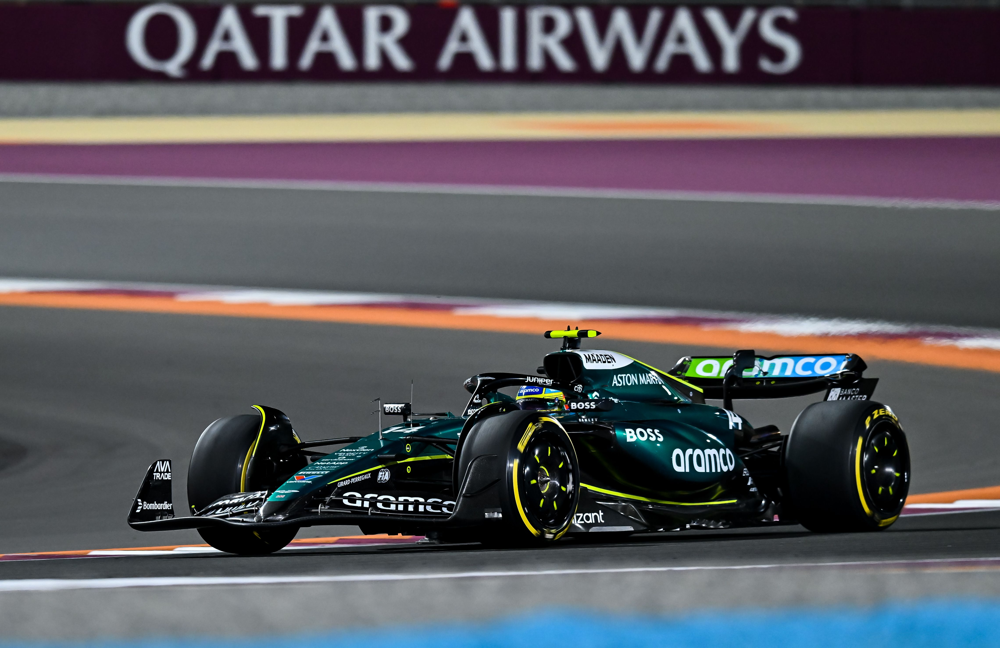

Formula 1nfo
Formula 1nfo
Aston Martin encontró su suelo en Catar
üì∞ Ramon Mascar√≥
4 dic 2024 - 18:03
Una de las grandes claves que nos ha traído este fin de semana ha sido el gran paso adelante que ha dado Aston Martin en Losail, capaz de regresar a la zona de puntos y aprovechar problemas para sumar seis unidades. Para esta carrera Aston Martin usaba el suelo estrenado en Hungría, mientras que la carrera anterior de Las Vegas llevaba el de Suzuka. Veamos qué efecto tuvo el cambio de suelo en el resultado de Alonso
En los actuales F1 el suelo es la piedra filosofal, la zona donde más rendimiento pueden extraer y más carga pueden lograr. El efecto aerodinámico del suelo es convertir al coche en un gran ala, de manera que al acelerar el aire y reducir la cantidad de partículas bajo él la presión vertical que ejerce es menor, y con ello, todo el coche empuja hacia abajo con una mayor fuerza. Lo mismo que sucede con las dos caras de un ala, pero maximizado a todo el coche.
La mejor manera para comparar el rendimientos de los dos suelos está viendo las vueltas de Clasificación realizadas con cada uno de ellos.
En la clasificación de Las Vegas Alonso fue superado por Hulkenberg en el tramo que iba desde la curva 5 a la 9, por la menor velocidad que era capaz de poder llevar, sobre todo en la curva lenta. La recta era bastante parecida, y en la curva rápida Hulkenberg levantaba menos
En cambio, en Catar Aston Martin volvió a ser competitivo entrando en la Q3 con Alonso. Esta es la comparativa entre las mejores vueltas de Alonso y de Magnussen, el primero de los Haas:
En recta Alonso tuvo un extra en Losail, logrando con ello una décima, que ampliaba en el paso por la curva 4, donde Magnussen tuvo que levantar más. Sin embargo, el paso por la curva 6 y 7 le volvía a suponer importantes problemas a Alonso y a dejar toda la diferencia en cero. Era la parte final donde Alonso lograba de nuevo estar por delante, en la recta hacia la curva 12 y en la entrada en meta.
Ha habido una mejora clara a una vuelta que le ha permitido tener mayor velocidad mínima de paso a diferentes rangos de velocidades.
Los Aston Martin estuvieron en el fondo de la parrilla en Las Vegas, muy lejos de los Haas, que eran la referencia y un paso por detrás de Russell, Leclerc, Pérez y Sainz. Esta diferencia fue similar en Losail, los Haas siguieron siendo muy fuertes a baja velocidad pero sólo cedieron 1km/h con Piastri, Sainz, Russell y Verstappen. Además se notó durante mucho menos tiempo, al sólo haber una curva lenta considerada lenta, como fue la curva 6.